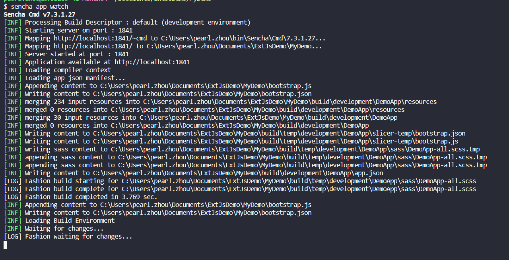
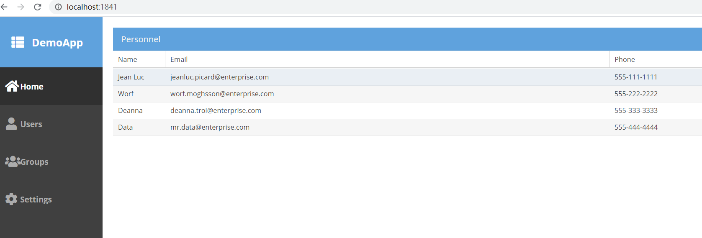

¶什么是ExtJs
ExtJS是一个流行的JavaScript框架，它为使用跨浏览器功能构建Web应用程序提供了丰富的UI。😄
ExtJS基本上用于创建桌面应用程序它支持所有现代浏览器，如IE6 +，FF，Chrome，safari 6+ 等。而sencha，sencha touch的另一个产品用于移动应用程序。
ExtJS基于MVC / MVVM架构。 最新版本的ExtJs 6是一个单一的平台，可以用于桌面和移动应用程序，而不需要为不同的平台提供不同的代码。
¶工具
-
Sencha Cmd
Sencha CMD是一个提供ExtJs代码缩小，脚手架，生产构建生成功能的工具。 -
Sencha IDE Plugins
Sencha IDE插件，它将Sencha框架集成到IntelliJ，WebStorm IDE中。 这有助于通过提供代码完成，代码检查，代码导航，代码生成，代码重构，模板创建和拼写检查等功能来提高开发人员的生产力。 -
Sencha Inspector
Sencha Inspector是一个调试工具，帮助调试器调试任何问题，同时开发。
¶环境搭建
¶1. 安装JDK
安装Sencha CMD之前需要先安装JDK, 1.8可以支持所有的功能， 最小版本1.6
¶2. 下载 和 安装 Sencha CMD
官网地址： https://www.sencha.com/products/extjs/cmd-download/
根据你的系统，选择对应的版本下载，然后一路点击下一步安装即可。
关于Sencha CMD 更详细的信息可以参考这个文档 Cmd Introduction guide
¶3. 配置环境变量
- 在path中添加
sencha cmd路径：C:\Users\[username]\bin\Sencha\Cmd - 打开命令行 输入
sencha, 会出现 snecha cmd的版本信息
¶4. 下载ExtJs SDK
下载完SDK之后, 解压缩即可
¶创建ExtJS项目
¶1. 通过Sencha CMD 创建一个ExtJs项目
1 | sencha -sdk [解压后的sdk的路径] generate app [项目名称] [项目地址] |
¶2. 运行 ExtJs项目
- 在项目目录下执行:
1 | sencha app watch |

- 在浏览器输入
http://localhost:1841/
